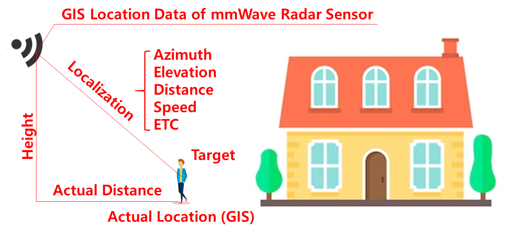
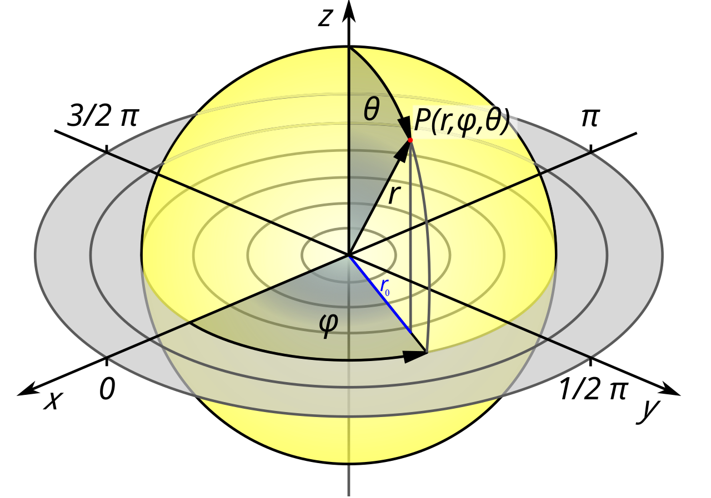
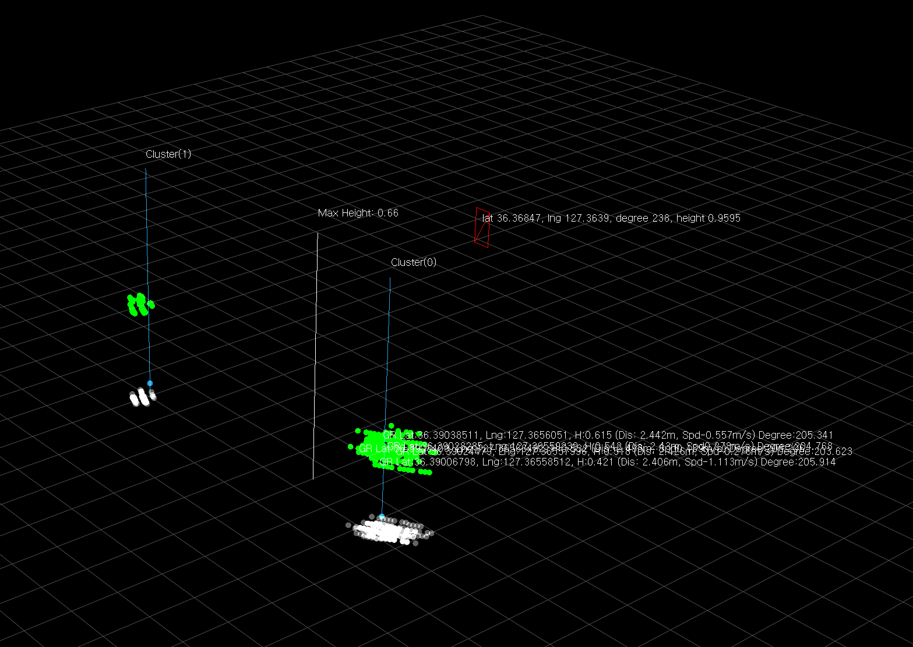
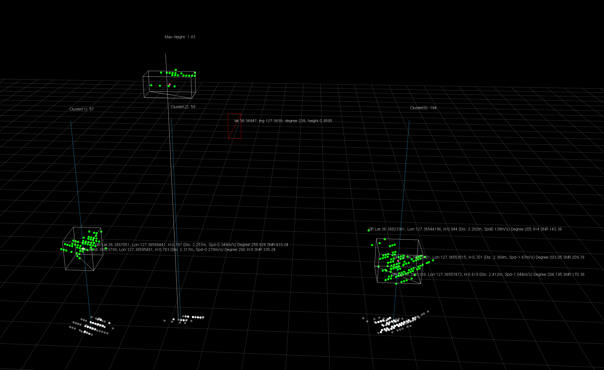
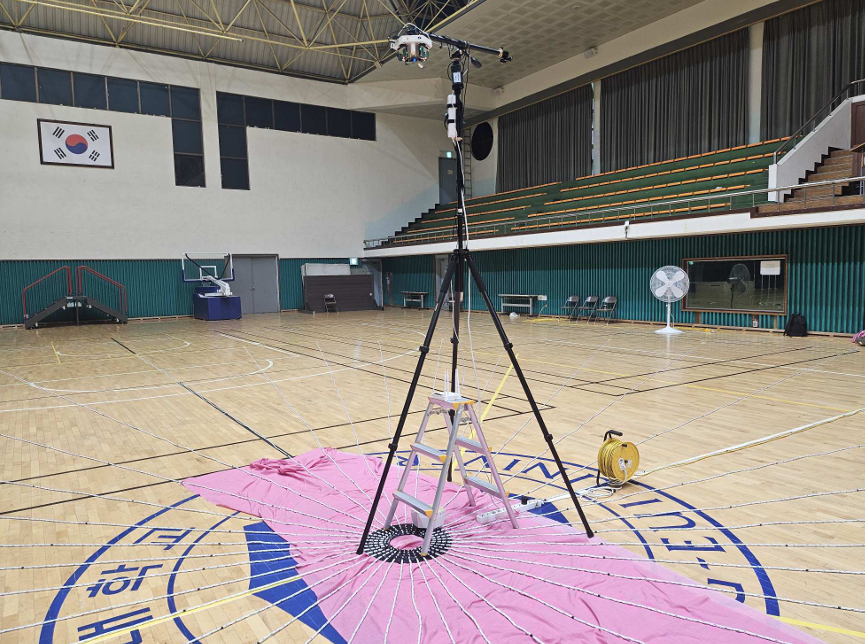
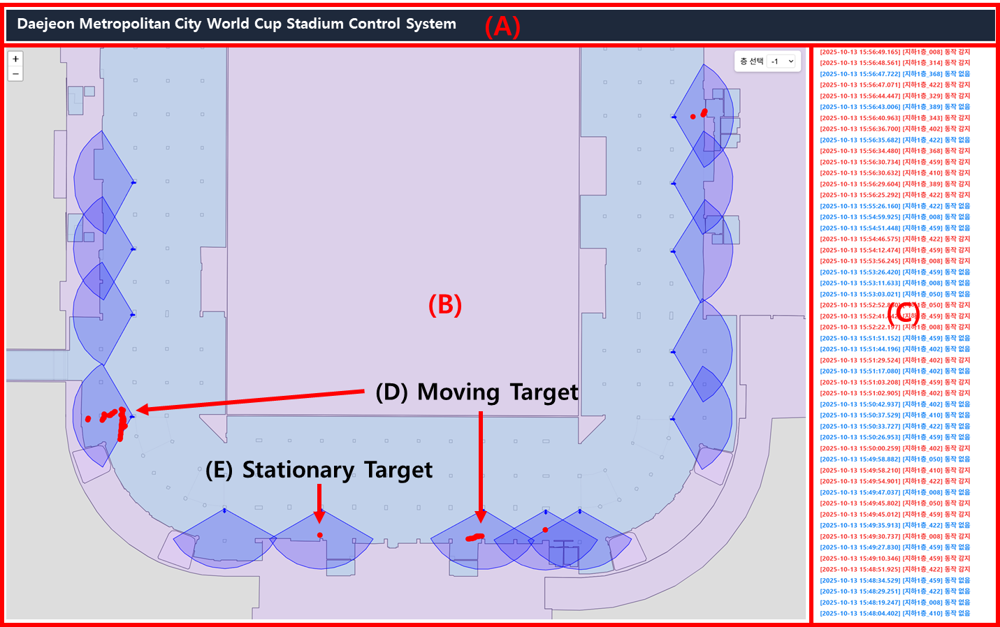
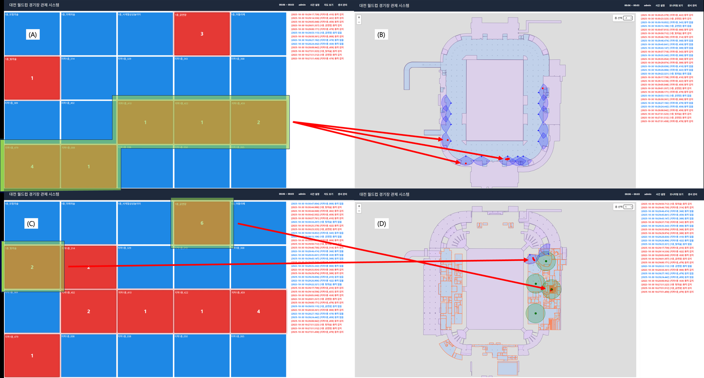

카메라 없이 지도 위에 사람을 그리다
밀리미터파(mmWave) 레이더는 사람을 영상이 아니라 한 무리의 ‘점’으로 본다. 얼굴도, 옷차림도 남기지 않는 그 점들을 어떻게 실제 위·경도로 되돌려 지도 위에 얹을 수 있을까. 평균 3.5cm의 오차로 실내를 지리참조한 연구, 그리고 그것을 경기장 규모로 키운 이야기.

“몇 명이 어디에 있는가”라는 오래된 질문
대규모 실내 공간을 운영해 본 사람이라면 누구나 같은 질문 앞에서 막힌다. 지금 이 건물 안에, 어느 구역에, 몇 사람이 있는가. 화재가 났을 때 아직 빠져나오지 못한 사람은 어느 층에 몰려 있는가. 경기장 특정 게이트에 인파가 위험하게 밀집하고 있지는 않은가. 답을 얻는 가장 익숙한 방법은 카메라다. 그러나 카메라는 세 가지 근본적인 한계를 안고 있다.
첫째는 프라이버시다. 사람을 얼굴 단위로 식별하는 장치를 공간 전체에 깔아 놓는 일은, 안전을 얻는 대가로 감시를 받아들이는 거래다. 둘째는 물리적 취약성이다. 조도가 낮거나 연기가 차거나 역광이 심하면 영상 인식은 급격히 무너진다. 정작 사람의 위치가 가장 절실한 재난 상황이 카메라가 가장 못 보는 상황이다. 셋째, 그리고 가장 자주 간과되는 문제는 좌표계의 부재다. 카메라가 “화면 왼쪽 위에 사람이 있다”고 알려 준들, 그것이 건물 도면 위 어느 지점인지, 위도와 경도로는 얼마인지는 알 수 없다. 픽셀은 지도가 아니다.
내가 붙잡은 문제는 바로 이 세 번째였다. 사람을 식별하지 않으면서도, 어두워도 흔들리지 않으면서, 감지 결과를 곧바로 지도 위 실제 좌표로 옮길 수 있는 센서는 없을까. 그 후보로 밀리미터파(mmWave) 레이더를 골랐고, 이 글은 그 선택이 어떻게 평균 3.5cm의 지리참조 정밀도로 이어졌는지에 대한 회고다.
Chapter 2. mmWave의 원리레이더는 사람을 ‘점’으로 본다
밀리미터파 레이더는 파장이 수 밀리미터 단위인 60GHz 대역의 전파를 사용한다. 우리가 쓴 방식은 FMCW(Frequency-Modulated Continuous Wave), 즉 주파수를 시간에 따라 톱니처럼 변조한 연속파를 쏘고 되돌아온 신호와의 주파수 차이를 읽는 방식이다. 이 한 번의 측정에서 레이더는 네 가지 물리량을 동시에 얻는다. 물체까지의 거리(주파수 차이에서), 물체의 속도(도플러 위상 변화에서), 그리고 안테나 배열이 만들어 내는 위상 차이로부터 방위각과 고도각을.
이 네 값 — 거리 r, 방위각 φ, 고도각 θ, 그리고 속도 — 은 본질적으로 하나의 점을 극좌표(구면좌표)로 기술한 것이다. 사람이 레이더 앞에 서면, 몸의 여러 표면에서 반사가 일어나 수십 개의 점이 돌아온다. 레이더에게 사람은 얼굴이나 실루엣이 아니라, 공중에 떠 있는 한 무리의 점, 곧 점군(point cloud)이다. 바로 이 성질이 프라이버시 문제를 원천적으로 비켜 간다. 되돌아온 것은 “누구”가 아니라 “어디에 얼마나 빠르게 움직이는 무언가가 있다”는 기하 정보뿐이기 때문이다.

다만 구면좌표로 흩뿌려진 점들은 그 자체로는 다루기 까다롭다. 각도와 거리가 뒤섞인 좌표에서는 “두 점이 같은 사람에게서 나왔는가”를 판단하는 거리 계산조차 직관적이지 않다. 그래서 첫 단계는 이 점들을 직교좌표계로 투영해, 우리가 아는 유클리드 공간의 x·y·z로 되돌리는 차원 변환이다. 극좌표에서 직교좌표로의 이 변환이 있어야 비로소 ‘가까운 점들끼리 묶는’ 클러스터링이 자연스럽게 성립한다.
Chapter 3. 방법점을 사람으로, 사람을 좌표로
핵심 파이프라인은 세 걸음으로 요약된다. 점군을 사람 단위로 묶고(클러스터링), 각 사람의 중심을 구하고, 그 중심을 실제 위·경도로 되돌린다(지리참조). 하나씩 짚어 보자.
1. 점군 클러스터링 — 여러 사람을 갈라내기
공간에 두 사람이 있으면 점군은 두 무리로 뭉친다. 직교좌표로 변환된 점들에 밀도 기반 군집화를 적용하면, 서로 가까운 점들이 하나의 클러스터로 묶이고 각 클러스터가 한 사람에 대응한다. 클러스터마다 점들의 무게중심을 구하면 그 사람의 대표 위치가, 도플러 속도의 평균을 구하면 그 사람의 이동 여부가 나온다. 아래 그림은 두 사람을 Cluster 0과 Cluster 1로 분리하고 각자의 위도·경도·높이·거리·속도를 산출한 실제 처리 결과다.

사람 수가 늘어도 원리는 같다. 세 사람이 서 있으면 세 개의 무리가 생기고, 각 무리를 바운딩박스로 감싸 점의 개수와 신호 대 잡음비(SNR), 산출된 위·경도를 함께 기록한다. 점 개수가 많을수록(예: 184개 대 57개 대 59개) 그 대상의 반사가 강하고 클러스터가 안정적이라는 뜻이다. 이 메타데이터는 이후 어느 클러스터를 신뢰할지 판단하는 근거가 된다.

2. 지리참조 — 상대좌표를 절대좌표로 되돌리기
여기까지 얻은 것은 어디까지나 센서를 원점으로 한 상대좌표다. “레이더 정면에서 오른쪽으로 2m, 앞으로 3m” 같은 값은 그 레이더가 어디에 어떤 방향으로 설치됐는지를 모르면 지도 위 점이 되지 못한다. 그래서 마지막 단계에서 센서의 GIS 설치정보 — 설치 지점의 위·경도, 설치 높이, 바라보는 방위 — 를 클러스터 중심의 상대좌표와 결합한다. 상대좌표를 설치 방위만큼 회전시키고 설치 지점만큼 평행이동하면, 각 사람의 위치가 실제 위도·경도·고도로 역산된다. 이것이 지리참조(geo-referencing)다. 이제 점군에서 나온 사람 하나하나가 세계 지도 위의 한 점이 된다.
3.5센티미터라는 숫자
방법이 그럴듯한 것과 실제로 정확한 것은 전혀 다른 문제다. 정밀도를 검증하기 위해 체육관 바닥에 기준 그리드를 그리고 삼각대에 레이더를 세웠다. 격자의 알려진 지점마다 사람이 서게 한 뒤, 레이더가 지리참조로 산출한 좌표와 실제 측량 좌표의 차이를 반복 측정했다. 바닥의 눈금이 진실값(ground truth) 역할을 한 셈이다.

결과는 기대를 넘었다. 평균 지리참조 오차는 약 3.5cm. 사람의 위치를 손바닥 하나 크기의 오차로 지도 위에 찍을 수 있다는 뜻이다. 같은 조건에서 CCTV 기반 방식과 비교했을 때 정밀도는 95.33% 개선되었다. 이 성과는 APCC 2024(발리)에서 제1저자 논문으로 발표되었고, IEEE Xplore에 문서 번호 10767948로 등재되어 있다. 아래 표는 두 방식의 성격 차이를 정리한 것이다.
| 비교 항목 | CCTV(픽셀 기반) | mmWave 지리참조 |
|---|---|---|
| 측정 대상 | 영상 픽셀(얼굴·실루엣) | 반사 점군(기하 정보) |
| 프라이버시 | 개인 식별 가능 | 비식별(누구인지 알 수 없음) |
| 저조도·연기 | 인식 급락 | 영향 거의 없음 |
| 출력 좌표 | 화면 내 상대 위치 | 실제 위·경도·고도 |
| 다중 인원 | 가림 시 취약 | 클러스터로 분리·추적 |
| 지리참조 정밀도 | 기준선 | 평균 오차 약 3.5cm (기준 대비 95.33% 개선) |
물론 이 숫자는 통제된 실험 환경에서 얻은 값임을 분명히 해 둔다. 벽면 다중 반사가 심한 공간, 대상이 서로 겹쳐 서는 상황, 설치 측량이 부정확한 현장에서는 오차가 커질 수 있다. 그럼에도 손바닥 크기의 평균 오차는, 카메라를 쓰지 않고 실내를 지도에 정합할 수 있다는 가능성을 실증으로 뒷받침하기에 충분했다.
한 대의 레이더에서 경기장 전체로
단일 센서로 손바닥 크기의 정밀도를 얻고 나니, 다음 질문은 자연스러웠다. 한 대가 아니라 수십 대라면, 방 하나가 아니라 경기장 전체라면. 레이더 한 대의 시야(FOV)는 부채꼴로 제한된다. 그래서 공간 전체를 덮으려면 여러 대를 서로 다른 지점에 배치해 부채꼴들을 겹쳐 깔아야 한다. 각 센서는 자기 시야 안의 대상을 지리참조해 위·경도로 올리고, 서로 다른 센서의 결과가 같은 절대좌표계 위에서 하나의 그림으로 합쳐진다.

분산 배치는 통신 구조를 요구한다. 수십 대의 60GHz 센서가 각자 산출한 재실 데이터를 중앙으로 모으려면 가볍고 실시간성이 있는 메시징이 필요했다. 그래서 MQTT 기반의 경량 파이프라인을 택했다. 각 센서(발행자)가 자기 구역의 재실 정보를 토픽으로 내보내면, 통합 관제 시스템(Ground Control System)이 이를 구독해 하나의 화면에 모은다. 센서를 더 붙이는 일이 토픽을 하나 더 여는 일로 끝나도록, 확장을 처음부터 설계에 넣었다.
이 구조를 실제로 검증한 무대가 대전 월드컵경기장이었다. 경기장 도면 위에 구역을 나누고, 각 구역의 실시간 재실 인원을 관제 대시보드에 얹었다. 어느 구역이 붐비는지, 어디가 비어 가는지가 카메라 한 대 없이 도면 위 숫자와 색으로 나타났다. 프라이버시를 지키면서 대규모 실내 인원 분포를 지도 위에 실시간으로 그린다는, 처음의 목표가 경기장 규모에서 작동한 순간이었다.

지도 위에 사람을 그린다는 것
이 연구가 내게 남긴 것은 3.5cm라는 숫자 하나가 아니다. 그것은 관점의 전환이었다. 우리는 오랫동안 “사람을 더 잘 보는 것”을 목표로 삼아 왔고, 그래서 더 선명한 카메라를 만들었다. 그러나 안전과 운영에 정말 필요한 것은 얼굴이 아니라 위치였다. 얼굴을 지우고 위치만 남기자, 프라이버시라는 오래된 딜레마가 문제 자체로서 사라졌다. 덜 보는 센서가 더 쓸모 있는 답을 주었다.
물론 mmWave가 만능은 아니다. 정밀도는 설치 측량에 묶여 있고, 극심한 다중 반사와 밀집 상황은 여전히 어려운 숙제다. 이 시스템은 사람의 판단을 돕는 도구이지 대체하는 심판이 아니며, 특히 공공 안전에 쓰일 때는 그 경계를 분명히 지켜야 한다. 그럼에도 방향은 또렷하다고 믿는다. 사람을 식별하지 않으면서 사람이 있는 곳을 지도 위에 정확히 그리는 일 — 그 조용한 점 하나가, 위기의 순간에 누군가를 찾아내는 첫 좌표가 될 수 있다.
참고
- D. Park et al., “mmWave Radar-based Indoor Geo-referencing for Occupancy Localization,” Proc. APCC 2024 (Asia-Pacific Conference on Communications), Bali, Indonesia, 2024. IEEE Xplore Document 10767948. (제1저자)
- 본문의 지리참조 정밀도(평균 오차 약 3.5cm, CCTV 대비 95.33% 개선)는 통제된 현장 실험에서 얻은 값이며, 설치 측량 정밀도·다중 반사·대상 밀집도 등 현장 조건에 따라 달라질 수 있다.
- 다중 센서 분산 배치·MQTT 파이프라인·통합 관제는 대전 월드컵경기장 실증을 기반으로 하며, 구체적 구성은 배치 환경에 따라 조정된다.